Відгуки критиків
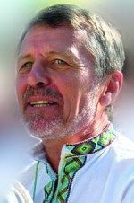
Йосип Струцюк — один із тих письменників-волинян, чия творчість — загальнонаціональне українське явище. Енергетика його художнього слова означена непідробним болем і водночас незгасним сяйвом віри та любові.
Віктор Вербич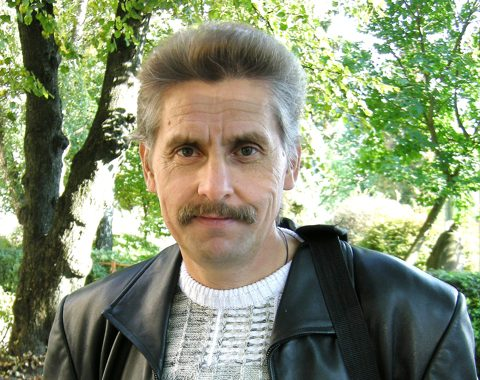
Коли читаєш Йосипа Струцюка, засвічується душа і поривається дух, хочеться жити і працювати для України. У Струцюка кожне слово, ба навіть титла, дихає Україною.
Петро Сорока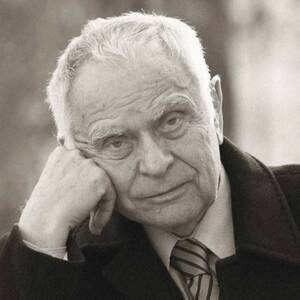
Творчість Йосипа Струцюка часто поєднує фольклорні елементи з елементами поетичної школи, яку репрезентують найкраще Микола Вінграновський, Іван Драч. Йосип Струцюк — митець тендітний, мислячий півтонами...
Дмитро Павличко, 1968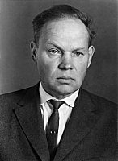
Справді красне, справді неповторне слово! Із власною піснею увійшов Йосип Струцюк в українську поезію.
Михайло Стельмах, 1979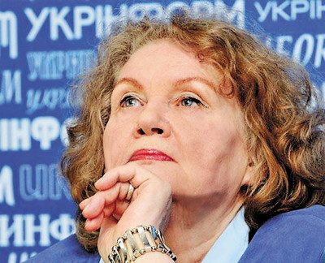
Головне, що перед нами — справжній поет. В основі своїй він неординарний, він чесний перед собою і перед людьми, він шукає свого фарватеру на глибинах.
Ліна Костенко, рецензія на збірку «Засвідчення», 1967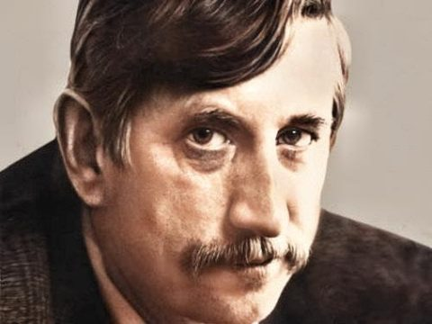
Написані в різні роки, Струцюкові «вірші з шухляди» творять єдину цілість, суцільну картину духовного світу людини, яка живе надією на краще майбутнє.
Володимир Лучук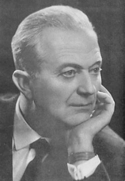
Йосип Струцюк — один із найкращих наших поетів, слово котрого природно лягає на музику.
Анатолій Кос-Анатольський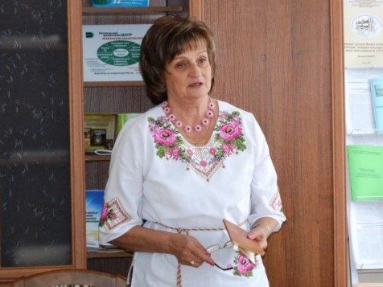
Мова прози Йосипа Струцюка — проста й образна водночас, щедро пересипана народними прислів'ями і приказками, вдалими порівняннями й метафорами.
Валентина Штинько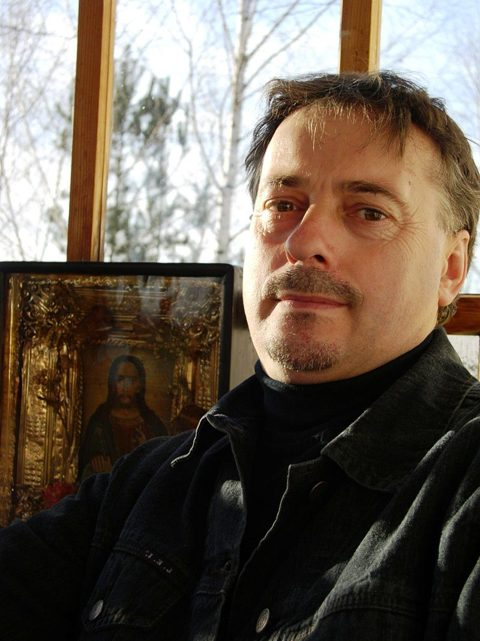
Коли задумуєшся над перцепцією поезії Йосипа Струцюка, вписується вона в загальне тло української поезії 60–70-х — поряд творчості Ліни Костенко, Ігоря Калинця, Василя Голобородька, Миколи Воробйова і Василя Стуса, додаючи контекст луцький (волинський).
Тадей Карабович, перекладач на польську, 2000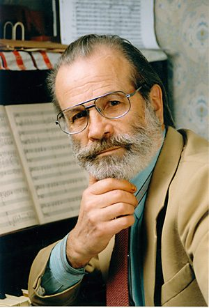
Діапазон творчості Йосипа Струцюка — широкий. Письменник пише для дорослих і дітей, оповідання, повісті, казки, а в останній час шукає себе в складному жанрі драматургії.
Анатолій Пашкевич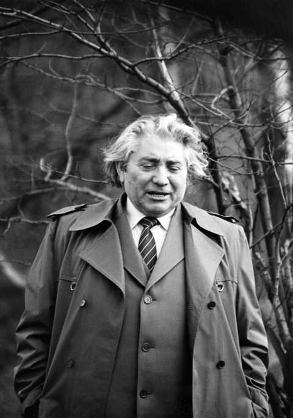
Проза Йосипа Струцюка така ж цікава, як і поезія. Опріч того, вона — чесна, правдива, безкомпромісна.
Роман Федорів, про збірку «Червень — місяць тиші», 1980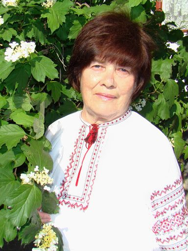
Читаєш і ловиш себе на думці: і ти так колись чи й зараз думаєш, тільки запізнився, а то й просто побоявся сказати власне слово, а ось автор встиг і не побоявся.
Олександра Кондратович, про роман «Круцю, круцю, журавлі»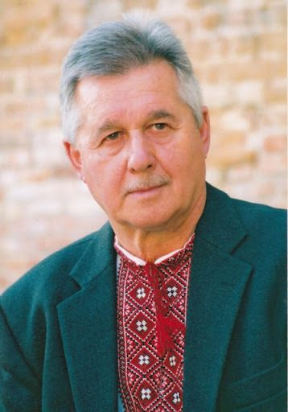
Серйозний, самокритично-вимогливий підхід до власної творчості письменник Йосип Струцюк засвідчив і новими виданнями прози та віршів для дітей, які почастішали в останні роки, і тривалим періодом, що проминув від другої поетичної книжки «Засвідчення» (1969) до третьої «Досвідчення» (1982). Поет не захотів та й не міг на догоду деяким критикам ламати свого почерку, який увиразнився ще в першій книжечці віршів «Освідчення» (1965)... У надмірно ускладненій образності часом губилися увага й уява читача, але автор не грішив дрібнотем'ям, у глибині його рядків завше світилася думка.
Василь Гей